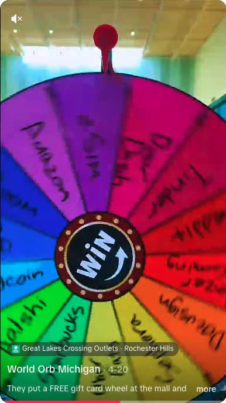
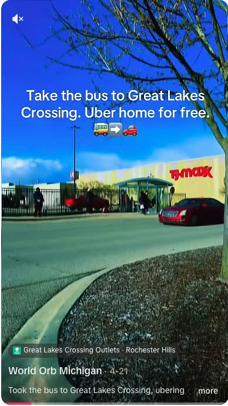

Clear, Human Content That Gives People a Reason to Care
I create approachable videos for products, experiences, and events, especially when an audience needs context before it will trust the offer or take the next step.
UGC Use Case: Building Trust for World
Access Point Studios operated Michigan's first World Orb location at Great Lakes Crossing. The challenge was not awareness alone. Many local residents, including people who could benefit most from the gift-card incentive, were skeptical of the technology and unsure whether the offer was legitimate. With limited content support from World, I tested a local TikTok strategy built around clear answers, recognizable places, and useful details. TikTok was the right medium because the videos could be shared into large community groups and reach people beyond the account's follower base. These two videos became early standouts on a new account with fewer than 100 followers.

↗ World UGC · Trust Building The Free Gift Card Wheel A direct, curiosity-led explanation of the offer and where people could find it. Watch on TikTok.
↗ World UGC · Shareable Story The Bus to Great Lakes Crossing A practical local story showing how to reach the activation without paying for a ride both ways. Watch on TikTok.